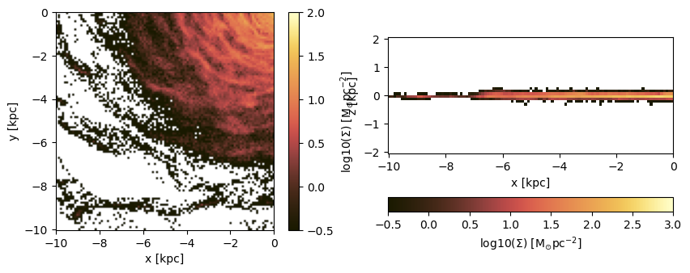
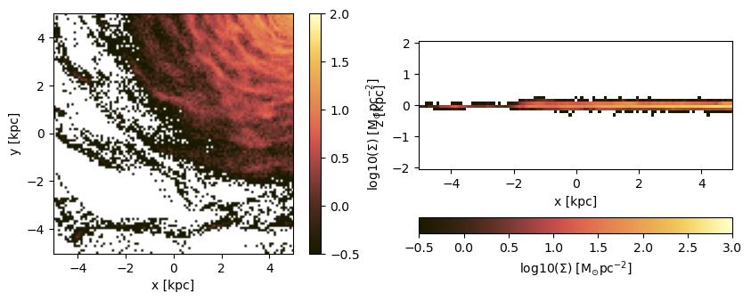
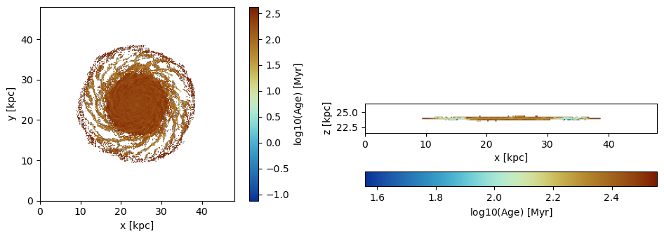
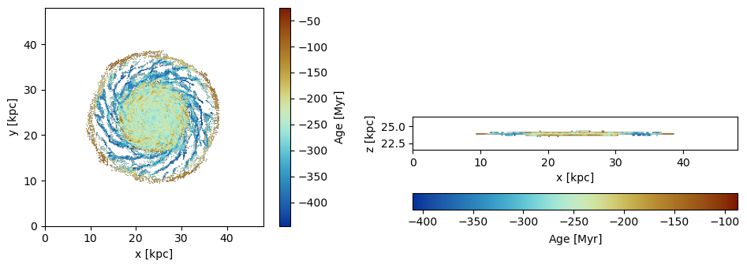

6. Particles: Projections
Load The Data
using Mera
info = getinfo(400, "../../testing/simulations/manu_sim_sf_L14");
particles = getparticles(info); [Mera]: 2020-02-18T23:09:51.793
Code: RAMSES
output [400] summary:
mtime: 2018-09-05T09:51:55.041
ctime: 2019-11-01T17:35:21.051
=======================================================
simulation time: 594.98 [Myr]
boxlen: 48.0 [kpc]
ncpu: 2048
ndim: 3
-------------------------------------------------------
amr: true
level(s): 6 - 14 --> cellsize(s): 750.0 [pc] - 2.93 [pc]
-------------------------------------------------------
hydro: true
hydro-variables: 7 --> (:rho, :vx, :vy, :vz, :p, :var6, :var7)
hydro-descriptor: (:density, :velocity_x, :velocity_y, :velocity_z, :thermal_pressure, :passive_scalar_1, :passive_scalar_2)
γ: 1.6667
-------------------------------------------------------
gravity: true
gravity-variables: (:epot, :ax, :ay, :az)
-------------------------------------------------------
particles: true
- Npart: 5.091500e+05
- Nstars: 5.066030e+05
- Ndm: 2.547000e+03
particle variables: (:vx, :vy, :vz, :mass, :birth)
-------------------------------------------------------
clumps: true
clump-variables: (:index, :lev, :parent, :ncell, :peak_x, :peak_y, :peak_z, Symbol("rho-"), Symbol("rho+"), :rho_av, :mass_cl, :relevance)
-------------------------------------------------------
namelist-file: false
timer-file: false
compilation-file: true
makefile: true
patchfile: true
=======================================================
[Mera]: Get particle data: 2020-02-18T23:10:01.886
Key vars=(:level, :x, :y, :z, :id)
Using var(s)=(1, 2, 3, 4, 5) = (:vx, :vy, :vz, :mass, :birth)
domain:
xmin::xmax: 0.0 :: 1.0 ==> 0.0 [kpc] :: 48.0 [kpc]
ymin::ymax: 0.0 :: 1.0 ==> 0.0 [kpc] :: 48.0 [kpc]
zmin::zmax: 0.0 :: 1.0 ==> 0.0 [kpc] :: 48.0 [kpc]
Reading data...100%|████████████████████████████████████| Time: 0:00:04
Found 5.089390e+05 particles
Memory used for data table :34.947275161743164 MB
-------------------------------------------------------particles.dataTable with 508939 rows, 10 columns:
Columns:
# colname type
────────────────────
1 level Int32
2 x Float64
3 y Float64
4 z Float64
5 id Int32
6 vx Float64
7 vy Float64
8 vz Float64
9 mass Float64
10 birth Float64Projection of Predefined Quantities
See the possible variables:
projection()Predefined vars for projections:
------------------------------------------------
=====================[gas]:=====================
-all the non derived hydro vars-
:cpu, :level, :rho, :cx, :cy, :cz, :vx, :vy, :vz, :p, var6,...
further possibilities: :rho, :density, :ρ
-derived hydro vars-
:x, :y, :z
:sd or :Σ or :surfacedensity
:mass, :cellsize, :freefall_time
:cs, :mach, :jeanslength, :jeansnumber
==================[particles]:==================
all the non derived vars:
:cpu, :level, :id, :family, :tag
:x, :y, :z, :vx, :vy, :vz, :mass, :birth, :metal....
-derived particle vars-
:age
==============[gas or particles]:===============
:v, :ekin
squared => :vx2, :vy2, :vz2
velocity dispersion => σx, σy, σz, σ
related to a given center:
---------------------------
:vr_cylinder, vr_sphere (radial components)
:vϕ_cylinder, :vθ
squared => :vr_cylinder2, :vϕ_cylinder2
velocity dispersion => σr_cylinder, σϕ_cylinder
2d maps (not projected):
:r_cylinder
:ϕ
------------------------------------------------Projection of a Single Quantity in Different Directions (z,y,x)
Here we project the surface density in the z-direction of the data within a particular vertical range (domain=[0:1]) on a grid corresponding to level=9. Pass any object of PartDataType (here: "particles") to the projection-function and select a variable by a Symbol (here: :sd = :surfacedensity = :Σ in Msol/pc^3)
proj_z = projection(particles, :sd, unit=:Msol_pc2, lmax=9, zrange=[0.45,0.55])
proj_z = projection(particles, :Σ, unit=:Msol_pc2, lmax=9, zrange=[0.45,0.55], verbose=false)
proj_z = projection(particles, :surfacedensity, unit=:Msol_pc2, lmax=9,zrange=[0.45,0.55], verbose=false)
proj_z = projection(particles, :sd, :Msol_pc2, lmax=9, zrange=[0.45,0.55], verbose=false) # The keyword "unit" (singular) can be omit if the following order is preserved: data-object, quantity, unit.
proj_x = projection(particles, :sd, :Msol_pc2, lmax=9, direction = :x, zrange=[0.45,0.55], verbose=false); # Project the surface density in x-direction [Mera]: 2020-02-12T20:07:42.33
center: [0.5, 0.5, 0.5] ==> [24.0 [kpc] :: 24.0 [kpc] :: 24.0 [kpc]]
domain:
xmin::xmax: 0.0 :: 1.0 ==> 0.0 [kpc] :: 48.0 [kpc]
ymin::ymax: 0.0 :: 1.0 ==> 0.0 [kpc] :: 48.0 [kpc]
zmin::zmax: 0.95 :: 1.0 ==> 45.6 [kpc] :: 48.0 [kpc]
Map data on given lmax: 9
xrange: 1 513
yrange: 1 513
zrange: 487 513
pixel-size: 93.75 [pc]Select a Range Related to a Center
See also in the documentation for: load data by selection
cv = (particles.boxlen / 2.) * particles.scale.kpc # provide the box-center in kpc
proj_z = projection(particles, :sd, :Msol_pc2, lmax=9,
xrange=[-10.,10.], yrange=[-10.,10.], zrange=[-2.,2.],
center=[cv,cv,cv], range_unit=:kpc); [Mera]: 2020-02-12T20:07:45.187
center: [0.5, 0.5, 0.5] ==> [24.0 [kpc] :: 24.0 [kpc] :: 24.0 [kpc]]
domain:
xmin::xmax: 0.2916667 :: 0.7083333 ==> 14.0 [kpc] :: 34.0 [kpc]
ymin::ymax: 0.2916667 :: 0.7083333 ==> 14.0 [kpc] :: 34.0 [kpc]
zmin::zmax: 0.4583333 :: 0.5416667 ==> 22.0 [kpc] :: 26.0 [kpc]
Map data on given lmax: 9
xrange: 150 364
yrange: 150 364
zrange: 235 279
pixel-size: 93.75 [pc]Use the short notation for the box center :bc or :boxcenter for all dimensions (x,y,z):
proj_z = projection(particles, :sd, :Msol_pc2, lmax=9,
xrange=[-10.,10.], yrange=[-10.,10.], zrange=[-2.,2.],
center=[:boxcenter], range_unit=:kpc); [Mera]: 2020-02-12T20:07:46.718
center: [0.5, 0.5, 0.5] ==> [24.0 [kpc] :: 24.0 [kpc] :: 24.0 [kpc]]
domain:
xmin::xmax: 0.2916667 :: 0.7083333 ==> 14.0 [kpc] :: 34.0 [kpc]
ymin::ymax: 0.2916667 :: 0.7083333 ==> 14.0 [kpc] :: 34.0 [kpc]
zmin::zmax: 0.4583333 :: 0.5416667 ==> 22.0 [kpc] :: 26.0 [kpc]
Map data on given lmax: 9
xrange: 150 364
yrange: 150 364
zrange: 235 279
pixel-size: 93.75 [pc]proj_z = projection(particles, :sd, :Msol_pc2, lmax=9,
xrange=[-10.,10.], yrange=[-10.,10.], zrange=[-2.,2.],
center=[:bc], range_unit=:kpc); [Mera]: 2020-02-12T20:07:46.818
center: [0.5, 0.5, 0.5] ==> [24.0 [kpc] :: 24.0 [kpc] :: 24.0 [kpc]]
domain:
xmin::xmax: 0.2916667 :: 0.7083333 ==> 14.0 [kpc] :: 34.0 [kpc]
ymin::ymax: 0.2916667 :: 0.7083333 ==> 14.0 [kpc] :: 34.0 [kpc]
zmin::zmax: 0.4583333 :: 0.5416667 ==> 22.0 [kpc] :: 26.0 [kpc]
Map data on given lmax: 9
xrange: 150 364
yrange: 150 364
zrange: 235 279
pixel-size: 93.75 [pc]Use the box center notation for individual dimensions, here x,z:
proj_z = projection(particles, :sd, :Msol_pc2, lmax=9,
xrange=[-10.,10.], yrange=[-10.,10.], zrange=[-2.,2.],
center=[:bc, 24., :bc], range_unit=:kpc); [Mera]: 2020-02-12T20:07:48.695
center: [0.5, 0.5, 0.5] ==> [24.0 [kpc] :: 24.0 [kpc] :: 24.0 [kpc]]
domain:
xmin::xmax: 0.2916667 :: 0.7083333 ==> 14.0 [kpc] :: 34.0 [kpc]
ymin::ymax: 0.2916667 :: 0.7083333 ==> 14.0 [kpc] :: 34.0 [kpc]
zmin::zmax: 0.4583333 :: 0.5416667 ==> 22.0 [kpc] :: 26.0 [kpc]
Map data on given lmax: 9
xrange: 150 364
yrange: 150 364
zrange: 235 279
pixel-size: 93.75 [pc]Get Multiple Quantities
Get several quantities with one function call by passing an array containing the selected variables (at least one entry). The keyword name for the units is now in plural.
proj1_x = projection(particles, [:sd], units=[:Msol_pc2], lmax=9,
direction = :x,
xrange=[-10.,10.],
yrange=[-10.,10.],
zrange=[-2.,2.],
center=[24.,24.,24.],
range_unit=:kpc); [Mera]: 2020-02-12T20:07:49.018
center: [0.5, 0.5, 0.5] ==> [24.0 [kpc] :: 24.0 [kpc] :: 24.0 [kpc]]
domain:
xmin::xmax: 0.2916667 :: 0.7083333 ==> 14.0 [kpc] :: 34.0 [kpc]
ymin::ymax: 0.2916667 :: 0.7083333 ==> 14.0 [kpc] :: 34.0 [kpc]
zmin::zmax: 0.4583333 :: 0.5416667 ==> 22.0 [kpc] :: 26.0 [kpc]
Map data on given lmax: 9
xrange: 150 364
yrange: 150 364
zrange: 235 279
pixel-size: 93.75 [pc]Pass an array containing several quantities to process and their corresponding units:
proj1_z = projection(particles, [:sd, :vx], units=[:Msol_pc2, :km_s], lmax=9,
direction = :x,
xrange=[-10.,10.],
yrange=[-10.,10.],
zrange=[-2.,2.],
center=[24.,24.,24.],
range_unit=:kpc); [Mera]: 2020-02-12T20:07:49.132
center: [0.5, 0.5, 0.5] ==> [24.0 [kpc] :: 24.0 [kpc] :: 24.0 [kpc]]
domain:
xmin::xmax: 0.2916667 :: 0.7083333 ==> 14.0 [kpc] :: 34.0 [kpc]
ymin::ymax: 0.2916667 :: 0.7083333 ==> 14.0 [kpc] :: 34.0 [kpc]
zmin::zmax: 0.4583333 :: 0.5416667 ==> 22.0 [kpc] :: 26.0 [kpc]
Map data on given lmax: 9
xrange: 150 364
yrange: 150 364
zrange: 235 279
pixel-size: 93.75 [pc]The function can be called without any keywords by preserving the following order: dataobject, variables, units
proj1_z = projection(particles, [:sd , :vx], [:Msol_pc2, :km_s], lmax=9,
direction = :x,
xrange=[-10.,10.],
yrange=[-10.,10.],
zrange=[-2.,2.],
center=[24.,24.,24.],
range_unit=:kpc); [Mera]: 2020-02-12T20:07:50.02
center: [0.5, 0.5, 0.5] ==> [24.0 [kpc] :: 24.0 [kpc] :: 24.0 [kpc]]
domain:
xmin::xmax: 0.2916667 :: 0.7083333 ==> 14.0 [kpc] :: 34.0 [kpc]
ymin::ymax: 0.2916667 :: 0.7083333 ==> 14.0 [kpc] :: 34.0 [kpc]
zmin::zmax: 0.4583333 :: 0.5416667 ==> 22.0 [kpc] :: 26.0 [kpc]
Map data on given lmax: 9
xrange: 150 364
yrange: 150 364
zrange: 235 279
pixel-size: 93.75 [pc]If all selected variables should be of the same unit use the following arguments: dataobject, array of quantities, unit (no array needed)
projvel_z = projection(particles, [:vx, :vy, :vz], :km_s, lmax=9,
xrange=[-10.,10.],
yrange=[-10.,10.],
zrange=[-2.,2.],
center=[24.,24.,24.],
range_unit=:kpc); [Mera]: 2020-02-12T20:07:50.259
center: [0.5, 0.5, 0.5] ==> [24.0 [kpc] :: 24.0 [kpc] :: 24.0 [kpc]]
domain:
xmin::xmax: 0.2916667 :: 0.7083333 ==> 14.0 [kpc] :: 34.0 [kpc]
ymin::ymax: 0.2916667 :: 0.7083333 ==> 14.0 [kpc] :: 34.0 [kpc]
zmin::zmax: 0.4583333 :: 0.5416667 ==> 22.0 [kpc] :: 26.0 [kpc]
Map data on given lmax: 9
xrange: 150 364
yrange: 150 364
zrange: 235 279
pixel-size: 93.75 [pc]Function Output
List the fields of the assigned object:
propertynames(proj1_z)(:maps, :maps_unit, :maps_lmax, :maps_mode, :lmax_projected, :lmin, :lmax, :ref_time, :ranges, :extent, :cextent, :ratio, :boxlen, :scale, :info)The projected 2D maps are stored in a dictionary:
proj1_z.mapsDataStructures.SortedDict{Any,Any,Base.Order.ForwardOrdering} with 2 entries:
:sd => [1.29223 1.29223 … 1.29223 0.0; 2.58445 1.29223 … 0.0 0.0; … ; 3.87668…
:vx => [178.738 143.611 … 131.468 NaN; 96.6932 154.086 … NaN NaN; … ; -189.97…The maps can be accessed by giving the name of the dictionary:
proj1_z.maps[:sd]214×44 Array{Float64,2}:
1.29223 1.29223 1.29223 1.29223 … 0.0 1.29223 1.29223 0.0
2.58445 1.29223 2.58445 2.58445 1.29223 1.29223 0.0 0.0
0.0 1.29223 3.87668 2.58445 1.29223 0.0 0.0 0.0
1.29223 1.29223 2.58445 1.29223 0.0 1.29223 0.0 0.0
0.0 0.0 1.29223 2.58445 1.29223 0.0 1.29223 0.0
2.58445 2.58445 3.87668 1.29223 … 0.0 0.0 0.0 0.0
0.0 2.58445 0.0 2.58445 2.58445 0.0 0.0 0.0
1.29223 1.29223 6.46114 3.87668 3.87668 0.0 0.0 0.0
0.0 1.29223 1.29223 1.29223 0.0 2.58445 0.0 0.0
1.29223 2.58445 1.29223 3.87668 5.16891 2.58445 0.0 0.0
1.29223 0.0 1.29223 7.75336 … 0.0 2.58445 0.0 0.0
2.58445 2.58445 2.58445 3.87668 6.46114 0.0 1.29223 0.0
2.58445 2.58445 5.16891 0.0 0.0 2.58445 0.0 0.0
⋮ ⋱ ⋮
3.87668 3.87668 5.16891 2.58445 5.16891 3.87668 0.0 0.0
1.29223 6.46114 2.58445 5.16891 3.87668 2.58445 2.58445 0.0
5.16891 7.75336 3.87668 6.46114 3.87668 2.58445 3.87668 0.0
11.63 7.75336 5.16891 5.16891 … 7.75336 5.16891 1.29223 0.0
1.29223 3.87668 3.87668 2.58445 2.58445 1.29223 0.0 0.0
5.16891 3.87668 3.87668 11.63 2.58445 3.87668 0.0 0.0
2.58445 6.46114 6.46114 6.46114 5.16891 2.58445 1.29223 0.0
2.58445 3.87668 3.87668 10.3378 9.04559 2.58445 0.0 0.0
5.16891 6.46114 7.75336 9.04559 … 3.87668 2.58445 0.0 0.0
3.87668 3.87668 0.0 6.46114 9.04559 6.46114 0.0 0.0
3.87668 5.16891 5.16891 1.29223 2.58445 3.87668 0.0 0.0
0.0 0.0 0.0 0.0 0.0 0.0 0.0 0.0The units of the maps are stored in:
proj1_z.maps_unitDataStructures.SortedDict{Any,Any,Base.Order.ForwardOrdering} with 2 entries:
:sd => :Msol_pc2
:vx => :km_sThe following fields are helpful for further calculations or plots.
proj1_z.ranges # normalized to the domain=[0:1]6-element Array{Float64,1}:
0.29166666666647767
0.7083333333328743
0.29166666666647767
0.7083333333328743
0.4583333333330363
0.5416666666663156proj1_z.extent # ranges in code units4-element Array{Float64,1}:
13.96875
34.03125
21.9375
26.0625proj1_z.cextent # ranges in code units relative to a given center (by default: box center)4-element Array{Float64,1}:
-10.031250000015554
10.031249999984446
-2.062500000015554
2.062499999984446proj1_z.ratio # the ratio between the two ranges4.863636363636363Plot Maps with Python
proj_z = projection(particles, :sd, :Msol_pc2, lmax=9,
zrange=[-2.,2.], center=[:boxcenter], range_unit=:kpc,
verbose=false)
proj_x = projection(particles, :sd, :Msol_pc2, lmax=9,
zrange=[-2.,2.], center=[:boxcenter], range_unit=:kpc,
verbose=false,
direction = :x);Python functions can be directly called in Julia, which gives the opportunity, e.g. to use the Matplotlib library.
using PyPlot
using ColorSchemes
cmap = ColorMap(ColorSchemes.lajolla.colors) # See http://www.fabiocrameri.ch/colourmaps.php
cmap2 = ColorMap(ColorSchemes.roma.colors)
figure(figsize=(10, 3.5))
subplot(1,2,1)
im = imshow( log10.( permutedims(proj_z.maps[:sd])), cmap=cmap, aspect=proj_z.ratio, origin="lower", extent=proj_z.cextent, vmin=0, vmax=3)
xlabel("x [kpc]")
ylabel("y [kpc]")
cb = colorbar(im, label=L"\mathrm{log10(\Sigma) \ [M_{\odot} pc^{-2}]}")
subplot(1,2,2)
im = imshow( log10.( permutedims(proj_x.maps[:sd])), cmap=cmap, origin="lower", extent=proj_x.cextent, vmin=0, vmax=3)
xlabel("x [kpc]")
ylabel("z [kpc]")
cb = colorbar(im, label=L"\mathrm{log10(\Sigma) \ [M_{\odot} pc^{-2}]}",orientation="horizontal", pad=0.2);
Project a specific spatial range and plot the axes of the map relative to the box-center (given by keyword: data_center):
proj_z = projection(particles, :sd, :Msol_pc2, lmax=9,
xrange=[-10.,0.], yrange=[-10.,0.], zrange=[-2.,2.], center=[:boxcenter], range_unit=:kpc,
verbose=false,
data_center=[24.,24.,24.], data_center_unit=:kpc)
proj_x = projection(particles, :sd, :Msol_pc2, lmax=9,
xrange=[-10.,0.], yrange=[-10.,0.], zrange=[-2.,2.], center=[:boxcenter], range_unit=:kpc,
verbose=false,
data_center=[24.,24.,24.], data_center_unit=:kpc,
direction = :x);figure(figsize=(10, 3.5))
subplot(1,2,1)
im = imshow( log10.( permutedims(proj_z.maps[:sd])), cmap=cmap, aspect=proj_z.ratio, origin="lower", extent=proj_z.cextent, vmin=0, vmax=3)
xlabel("x [kpc]")
ylabel("y [kpc]")
cb = colorbar(im, label=L"\mathrm{log10(\Sigma) \ [M_{\odot} pc^{-2}]}")
subplot(1,2,2)
im = imshow( log10.( permutedims(proj_x.maps[:sd])), cmap=cmap, origin="lower", extent=proj_x.cextent, vmin=0, vmax=3)
xlabel("x [kpc]")
ylabel("z [kpc]")
cb = colorbar(im, label=L"\mathrm{log10(\Sigma) \ [M_{\odot} pc^{-2}]}",orientation="horizontal", pad=0.2);
Plot the axes of the map relative to the map-center (given by keyword: data_center):
proj_z = projection(particles, :sd, :Msol_pc2, lmax=9,
xrange=[-10.,0.], yrange=[-10.,0.], zrange=[-2.,2.], center=[:boxcenter], range_unit=:kpc,
verbose=false,
data_center=[19.,19.,24.], data_center_unit=:kpc)
proj_x = projection(particles, :sd, :Msol_pc2, lmax=9,
xrange=[-10.,0.], yrange=[-10.,0.], zrange=[-2.,2.], center=[:boxcenter], range_unit=:kpc,
verbose=false,
data_center=[19.,19.,24.], data_center_unit=:kpc,
direction = :x);figure(figsize=(10, 3.5))
subplot(1,2,1)
im = imshow( log10.( permutedims(proj_z.maps[:sd])), cmap=cmap, aspect=proj_z.ratio, origin="lower", extent=proj_z.cextent, vmin=0, vmax=3)
xlabel("x [kpc]")
ylabel("y [kpc]")
cb = colorbar(im, label=L"\mathrm{log10(\Sigma) \ [M_{\odot} pc^{-2}]}")
subplot(1,2,2)
im = imshow( log10.( permutedims(proj_x.maps[:sd])), cmap=cmap, origin="lower", extent=proj_x.cextent, vmin=0, vmax=3)
xlabel("x [kpc]")
ylabel("z [kpc]")
cb = colorbar(im, label=L"\mathrm{log10(\Sigma) \ [M_{\odot} pc^{-2}]}",orientation="horizontal", pad=0.2);
Projections of Derived Kinematic Data
Use quantities in cartesian coordinates:
Project the following derived data (mass weighted by default): The absolute value of the velocity :v, the velocity dispersion :σ in different directions and the kinetic energy :ekin. The Julia language supports Unicode characters and can be inserted by e.g. "\sigma + tab-key" leading to: σ.
proj_z = projection(particles, [:v, :σ, :σx, :σy, :σz, :ekin],
units=[:km_s,:km_s,:km_s,:km_s,:km_s,:erg],
lmax=9,
xrange=[-10.,10.], yrange=[-10.,10.], zrange=[-2.,2.],
center=[24.,24.,24.], range_unit=:kpc); [Mera]: 2020-02-18T23:11:45.881
center: [0.5, 0.5, 0.5] ==> [24.0 [kpc] :: 24.0 [kpc] :: 24.0 [kpc]]
domain:
xmin::xmax: 0.2916667 :: 0.7083333 ==> 14.0 [kpc] :: 34.0 [kpc]
ymin::ymax: 0.2916667 :: 0.7083333 ==> 14.0 [kpc] :: 34.0 [kpc]
zmin::zmax: 0.4583333 :: 0.5416667 ==> 22.0 [kpc] :: 26.0 [kpc]
Map data on given lmax: 9
xrange: 150 364
yrange: 150 364
zrange: 235 279
pixel-size: 93.75 [pc]
100%|███████████████████████████████████████████████████| Time: 0:00:03For the velocity dispersion additional maps are created to created the mass-weighted quantity: E. g.: σx = sqrt( <vx^2> - < vx >^2 )
proj_z.mapsDataStructures.SortedDict{Any,Any,Base.Order.ForwardOrdering} with 14 entries:
:ekin => [2.4169e51 NaN … NaN NaN; NaN NaN … NaN NaN; … ; NaN NaN … NaN NaN; …
:sd => [0.00129258 0.0 … 0.0 0.0; 0.0 0.0 … 0.0 0.0; … ; 0.0 0.0 … 0.0 0.0;…
:v => [146.277 NaN … NaN NaN; NaN NaN … NaN NaN; … ; NaN NaN … NaN NaN; Na…
:v2 => [4.97588 NaN … NaN NaN; NaN NaN … NaN NaN; … ; NaN NaN … NaN NaN; Na…
:vx => [1.22376 NaN … NaN NaN; NaN NaN … NaN NaN; … ; NaN NaN … NaN NaN; Na…
:vx2 => [1.49758 NaN … NaN NaN; NaN NaN … NaN NaN; … ; NaN NaN … NaN NaN; Na…
:vy => [-1.84928 NaN … NaN NaN; NaN NaN … NaN NaN; … ; NaN NaN … NaN NaN; N…
:vy2 => [3.41984 NaN … NaN NaN; NaN NaN … NaN NaN; … ; NaN NaN … NaN NaN; Na…
:vz => [-0.241781 NaN … NaN NaN; NaN NaN … NaN NaN; … ; NaN NaN … NaN NaN; …
:vz2 => [0.058458 NaN … NaN NaN; NaN NaN … NaN NaN; … ; NaN NaN … NaN NaN; N…
:σ => [1.90735e-6 NaN … NaN NaN; NaN NaN … NaN NaN; … ; NaN NaN … NaN NaN;…
:σx => [0.0 NaN … NaN NaN; NaN NaN … NaN NaN; … ; NaN NaN … NaN NaN; NaN Na…
:σy => [0.0 NaN … NaN NaN; NaN NaN … NaN NaN; … ; NaN NaN … NaN NaN; NaN Na…
:σz => [1.72737e-7 NaN … NaN NaN; NaN NaN … NaN NaN; … ; NaN NaN … NaN NaN;…proj_z.maps_unitDataStructures.SortedDict{Any,Any,Base.Order.ForwardOrdering} with 14 entries:
:ekin => :erg
:sd => :standard
:v => :km_s
:v2 => :standard
:vx => :standard
:vx2 => :standard
:vy => :standard
:vy2 => :standard
:vz => :standard
:vz2 => :standard
:σ => :km_s
:σx => :km_s
:σy => :km_s
:σz => :km_susedmemory(proj_z);Memory used: 5.16 MBfigure(figsize=(10, 5.5))
subplot(2, 3, 1)
title("v [km/s]")
imshow( (permutedims(proj_z.maps[:v]) ), cmap=cmap2, origin="lower", extent=proj_z.cextent, vmax=300.)
colorbar()
subplot(2, 3, 2)
title("σ [km/s]")
imshow( (permutedims(proj_z.maps[:σ]) ), cmap=cmap2, origin="lower", extent=proj_z.cextent)
colorbar()
subplot(2, 3, 3)
title("Ekin [erg]")
imshow( log10.(permutedims(proj_z.maps[:ekin]) ), cmap=cmap2, origin="lower", extent=proj_z.cextent)
colorbar()
subplot(2, 3, 4)
title("σx [km/s]")
imshow( (permutedims(proj_z.maps[:σx]) ), cmap=cmap2, origin="lower", extent=proj_z.cextent)
colorbar()
subplot(2, 3, 5)
title("σy [km/s]")
imshow( (permutedims(proj_z.maps[:σy]) ), cmap=cmap2, origin="lower", extent=proj_z.cextent)
colorbar()
subplot(2, 3, 6)
title("σz [km/s]")
imshow( (permutedims(proj_z.maps[:σz]) ), cmap=cmap2, origin="lower", extent=proj_z.cextent)
colorbar();

Use quantities in cylindrical coordinates:
Face-on disc (z-direction)
For the cylindrical or spherical components of a quantity, the center of the coordinate system is used (keywords: datacenter = center default) and can be given with the keyword "datacenter" and its units with "datacenterunit". Additionally, the quantities that are based on cartesian coordinates can be given.
proj_z = projection(particles, [:v, :σ, :σx, :σy, :ϕ, :r_cylinder, :vr_cylinder, :vϕ_cylinder, :σr_cylinder, :σϕ_cylinder],
units=[:km_s,:km_s,:km_s, :km_s, :standard, :kpc, :km_s, :km_s, :km_s, :km_s],
xrange=[-10.,10.], yrange=[-10.,10.], zrange=[-2.,2.],
center=[:boxcenter], range_unit=:kpc,
data_center=[24.,24.,24.], data_center_unit=:kpc); [Mera]: 2020-02-18T23:14:53.029
center: [0.5, 0.5, 0.5] ==> [24.0 [kpc] :: 24.0 [kpc] :: 24.0 [kpc]]
domain:
xmin::xmax: 0.2916667 :: 0.7083333 ==> 14.0 [kpc] :: 34.0 [kpc]
ymin::ymax: 0.2916667 :: 0.7083333 ==> 14.0 [kpc] :: 34.0 [kpc]
zmin::zmax: 0.4583333 :: 0.5416667 ==> 22.0 [kpc] :: 26.0 [kpc]
Map data on given lmax: 9
xrange: 150 364
yrange: 150 364
zrange: 235 279
pixel-size: 93.75 [pc]
100%|███████████████████████████████████████████████████| Time: 0:00:01proj_z.mapsDataStructures.SortedDict{Any,Any,Base.Order.ForwardOrdering} with 18 entries:
:r_cylinder => [14.0096 13.9434 … 14.1205 14.1874; 13.9434 13.877 … 14.0549…
:sd => [0.00129258 0.0 … 0.0 0.0; 0.0 0.0 … 0.0 0.0; … ; 0.0 0.0 … …
:v => [146.277 NaN … NaN NaN; NaN NaN … NaN NaN; … ; NaN NaN … NaN…
:v2 => [4.97588 NaN … NaN NaN; NaN NaN … NaN NaN; … ; NaN NaN … NaN…
:vr_cylinder => [29.3132 NaN … NaN NaN; NaN NaN … NaN NaN; … ; NaN NaN … NaN…
:vr_cylinder2 => [0.199823 NaN … NaN NaN; NaN NaN … NaN NaN; … ; NaN NaN … Na…
:vx => [1.22376 NaN … NaN NaN; NaN NaN … NaN NaN; … ; NaN NaN … NaN…
:vx2 => [1.49758 NaN … NaN NaN; NaN NaN … NaN NaN; … ; NaN NaN … NaN…
:vy => [-1.84928 NaN … NaN NaN; NaN NaN … NaN NaN; … ; NaN NaN … Na…
:vy2 => [3.41984 NaN … NaN NaN; NaN NaN … NaN NaN; … ; NaN NaN … NaN…
:vϕ_cylinder => [142.43 NaN … NaN NaN; NaN NaN … NaN NaN; … ; NaN NaN … NaN …
:vϕ_cylinder2 => [4.7176 NaN … NaN NaN; NaN NaN … NaN NaN; … ; NaN NaN … NaN …
:σ => [1.90735e-6 NaN … NaN NaN; NaN NaN … NaN NaN; … ; NaN NaN … …
:σr_cylinder => [0.0 NaN … NaN NaN; NaN NaN … NaN NaN; … ; NaN NaN … NaN NaN…
:σx => [0.0 NaN … NaN NaN; NaN NaN … NaN NaN; … ; NaN NaN … NaN NaN…
:σy => [0.0 NaN … NaN NaN; NaN NaN … NaN NaN; … ; NaN NaN … NaN NaN…
:σϕ_cylinder => [0.0 NaN … NaN NaN; NaN NaN … NaN NaN; … ; NaN NaN … NaN NaN…
:ϕ => [3.92699 3.92224 … 2.34837 2.34373; 3.93175 3.92699 … 2.3436…proj_z.maps_unitDataStructures.SortedDict{Any,Any,Base.Order.ForwardOrdering} with 18 entries:
:r_cylinder => :kpc
:sd => :standard
:v => :km_s
:v2 => :standard
:vr_cylinder => :km_s
:vr_cylinder2 => :standard
:vx => :standard
:vx2 => :standard
:vy => :standard
:vy2 => :standard
:vϕ_cylinder => :km_s
:vϕ_cylinder2 => :standard
:σ => :km_s
:σr_cylinder => :km_s
:σx => :km_s
:σy => :km_s
:σϕ_cylinder => :km_s
:ϕ => :radianfigure(figsize=(10, 8.5))
subplot(3, 3, 1)
title("Radius [kpc]")
imshow( permutedims(proj_z.maps[:r_cylinder] ), cmap=cmap2, origin="lower", extent=proj_z.cextent)
colorbar()
subplot(3, 3, 2)
title("vr [km/s]")
imshow( permutedims(proj_z.maps[:vr_cylinder] ), cmap=cmap2, origin="lower", extent=proj_z.cextent, vmin=-200.,vmax=200.)
colorbar()
subplot(3, 3, 3)
title("vϕ [km/s]")
imshow( permutedims(proj_z.maps[:vϕ_cylinder] ), cmap=cmap2, origin="lower", extent=proj_z.cextent)
colorbar()
subplot(3, 3, 4)
title("ϕ-angle")
imshow( (permutedims(proj_z.maps[:ϕ]) ), cmap=cmap2, origin="lower", extent=proj_z.cextent)
colorbar()
subplot(3, 3, 5)
title("σr [km/s]")
imshow( permutedims(proj_z.maps[:σr_cylinder] ), cmap=cmap2, origin="lower", extent=proj_z.cextent)
colorbar()
subplot(3, 3, 6)
title("σϕ [km/s]")
imshow( permutedims(proj_z.maps[:σϕ_cylinder] ), cmap=cmap2, origin="lower", extent=proj_z.cextent)
colorbar()
subplot(3, 3, 7)
title("σ [km/s]")
imshow( (permutedims(proj_z.maps[:σ]) ), cmap=cmap2, origin="lower", extent=proj_z.cextent)
colorbar()
subplot(3, 3, 8)
title("σx [km/s]")
imshow( permutedims(proj_z.maps[:σx] ), cmap=cmap2, origin="lower", extent=proj_z.cextent)
colorbar()
subplot(3, 3, 9)
title("σy [km/s]")
imshow( permutedims(proj_z.maps[:σy] ), cmap=cmap2, origin="lower", extent=proj_z.cextent)
colorbar();
Project on a Coarser Grid
The default is the projection on the maximum loaded grid level (always provided in the output). Choose a smaller level with the keyword lmax to project on a coarser grid in addition. Higher-resolution data is averaged within each coarser grid-cell (default: mass-weighted). By default, the data is assumed to be in the center of the simulation box.
proj_z = projection(particles,
[:v, :σ, :σx, :σy, :σz, :vr_cylinder, :vϕ_cylinder, :σr_cylinder, :σϕ_cylinder],
:km_s,
xrange=[-10.,10.], yrange=[-10.,10.], zrange=[-2.,2.],
center=[:boxcenter], range_unit=:kpc,
lmax=8); [Mera]: 2020-02-18T23:15:37.232
center: [0.5, 0.5, 0.5] ==> [24.0 [kpc] :: 24.0 [kpc] :: 24.0 [kpc]]
domain:
xmin::xmax: 0.2916667 :: 0.7083333 ==> 14.0 [kpc] :: 34.0 [kpc]
ymin::ymax: 0.2916667 :: 0.7083333 ==> 14.0 [kpc] :: 34.0 [kpc]
zmin::zmax: 0.4583333 :: 0.5416667 ==> 22.0 [kpc] :: 26.0 [kpc]
Map data on given lmax: 8
xrange: 75 183
yrange: 75 183
zrange: 118 140
pixel-size: 187.5 [pc]
100%|███████████████████████████████████████████████████| Time: 0:00:01The projection onto the maximum loaded grid is always provided:
proj_z.mapsDataStructures.SortedDict{Any,Any,Base.Order.ForwardOrdering} with 19 entries:
:sd => [0.000323146 0.000323146 … 0.0 0.0; 0.000969439 0.000323146 …
:v => [146.277 156.41 … NaN NaN; 168.992 166.428 … NaN NaN; … ; Na…
:v2 => [4.97588 5.6892 … NaN NaN; 6.6621 6.4413 … NaN NaN; … ; NaN …
:vr_cylinder => [29.3132 76.3408 … NaN NaN; 26.5929 6.80341 … NaN NaN; … ; N…
:vr_cylinder2 => [0.199823 1.35529 … NaN NaN; 0.25831 0.010764 … NaN NaN; … ;…
:vx => [1.22376 0.610176 … NaN NaN; 1.49846 1.69991 … NaN NaN; … ; …
:vx2 => [1.49758 0.372314 … NaN NaN; 2.33418 2.88971 … NaN NaN; … ; …
:vy => [-1.84928 -2.29076 … NaN NaN; -2.04837 -1.86716 … NaN NaN; ……
:vy2 => [3.41984 5.24756 … NaN NaN; 4.22525 3.48629 … NaN NaN; … ; N…
:vz => [-0.241781 -0.263284 … NaN NaN; -0.187282 0.25555 … NaN NaN;…
:vz2 => [0.058458 0.0693187 … NaN NaN; 0.102671 0.0653057 … NaN NaN;…
:vϕ_cylinder => [142.43 135.419 … NaN NaN; 164.297 165.443 … NaN NaN; … ; Na…
:vϕ_cylinder2 => [4.7176 4.26459 … NaN NaN; 6.30112 6.36523 … NaN NaN; … ; Na…
:σ => [1.90735e-6 0.0 … NaN NaN; 9.45804 1.90735e-6 … NaN NaN; … ;…
:σr_cylinder => [0.0 0.0 … NaN NaN; 20.0894 8.42937e-8 … NaN NaN; … ; NaN Na…
:σx => [0.0 0.0 … NaN NaN; 19.5408 0.0 … NaN NaN; … ; NaN NaN … NaN…
:σy => [0.0 0.0 … NaN NaN; 11.246 1.9543e-6 … NaN NaN; … ; NaN NaN …
:σz => [1.72737e-7 0.0 … NaN NaN; 17.0492 0.0 … NaN NaN; … ; NaN Na…
:σϕ_cylinder => [0.0 0.0 … NaN NaN; 10.1009 0.0 … NaN NaN; … ; NaN NaN … NaN…proj_z.maps_unitDataStructures.SortedDict{Any,Any,Base.Order.ForwardOrdering} with 19 entries:
:sd => :standard
:v => :km_s
:v2 => :standard
:vr_cylinder => :km_s
:vr_cylinder2 => :standard
:vx => :standard
:vx2 => :standard
:vy => :standard
:vy2 => :standard
:vz => :standard
:vz2 => :standard
:vϕ_cylinder => :km_s
:vϕ_cylinder2 => :standard
:σ => :km_s
:σr_cylinder => :km_s
:σx => :km_s
:σy => :km_s
:σz => :km_s
:σϕ_cylinder => :km_sfigure(figsize=(10, 8.5))
subplot(3, 3, 1)
title("|v| [km/s]")
imshow( permutedims(proj_z.maps[:v] ), cmap=cmap2, origin="lower", extent=proj_z.cextent, vmax=300.)
colorbar()
subplot(3, 3, 2)
title("vr [km/s]")
imshow( permutedims(proj_z.maps[:vr_cylinder] ), cmap=cmap2, origin="lower", extent=proj_z.cextent, vmin=-200.,vmax=200.)
colorbar()
subplot(3, 3, 3)
title("vϕ [km/s]")
imshow( permutedims(proj_z.maps[:vϕ_cylinder] ), cmap=cmap2, origin="lower", extent=proj_z.cextent)
colorbar()
subplot(3, 3, 4)
title("σz [km/s]")
imshow( (permutedims(proj_z.maps[:σz]) ), cmap=cmap2, origin="lower", extent=proj_z.cextent)
colorbar()
subplot(3, 3, 5)
title("σr [km/s]")
imshow( (permutedims(proj_z.maps[:σr_cylinder] )), cmap=cmap2, origin="lower", extent=proj_z.cextent)
colorbar()
subplot(3, 3, 6)
title("σϕ [km/s]")
imshow( (permutedims(proj_z.maps[:σϕ_cylinder] )), cmap=cmap2, origin="lower", extent=proj_z.cextent)
colorbar()
subplot(3, 3, 7)
title("σ [km/s]")
imshow( (permutedims(proj_z.maps[:σ]) ), cmap=cmap2, origin="lower", extent=proj_z.cextent)
colorbar()
subplot(3, 3, 8)
title("σx [km/s]")
imshow( (permutedims(proj_z.maps[:σx] )), cmap=cmap2, origin="lower", extent=proj_z.cextent)
colorbar()
subplot(3, 3, 9)
title("σy [km/s]")
imshow( (permutedims(proj_z.maps[:σy] )), cmap=cmap2, origin="lower", extent=proj_z.cextent)
colorbar();
Remap a Projected Data onto a Coarser Grid
Pass the object with the projected data to the function remap and the level of the coarser grid:
proj_zlmax = remap(proj_z, 6, weighting=:mass);remap from:
level 8 => 6
cellsize 187.5 [pc] => 750.0 [pc]
pixels (108, 108) => (27, 27)proj_zlmax.maps_lmaxDataStructures.SortedDict{Any,Any,Base.Order.ForwardOrdering} with 19 entries:
:sd => [0.000323146 0.000646292 … 0.000969439 0.0; 0.000323146 0.00…
:v => [146.277 168.298 … 156.122 NaN; 139.301 147.989 … 163.056 Na…
:v2 => [4.97588 6.59448 … 5.72437 NaN; 4.51262 5.41716 … 6.34405 Na…
:vr_cylinder => [29.3132 84.1136 … 12.6568 NaN; -65.7457 1.40056 … -13.4105 …
:vr_cylinder2 => [0.199823 1.66491 … 1.15359 NaN; 1.0052 0.0947446 … 0.295219…
:vx => [1.22376 0.492592 … -1.53257 NaN; 2.0553 1.52317 … -1.57894 …
:vx2 => [1.49758 0.249049 … 2.51795 NaN; 4.22424 2.55826 … 2.92281 N…
:vy => [-1.84928 -2.42313 … -1.35159 NaN; -0.536675 -1.55209 … -1.8…
:vy2 => [3.41984 5.88813 … 3.07412 NaN; 0.28802 2.57923 … 3.41524 Na…
:vz => [-0.241781 -0.672377 … -0.170057 NaN; -0.0189591 -0.412132 ……
:vz2 => [0.058458 0.457301 … 0.132298 NaN; 0.000359447 0.279663 … 0.…
:vϕ_cylinder => [142.43 138.647 … 133.136 NaN; 122.804 142.63 … 158.394 NaN;…
:vϕ_cylinder2 => [4.7176 4.47227 … 4.43848 NaN; 3.50705 5.04275 … 6.04282 NaN…
:σ => [1.90735e-6 5.72296 … 15.5331 0.0; 0.0 37.3334 … 26.3214 0.0…
:σr_cylinder => [0.0 9.17629 … 69.2848 0.0; 0.0 20.1358 … 33.0096 0.0; … ; 0…
:σx => [0.0 5.24676 … 26.9716 0.0; 0.0 32.0052 … 42.9889 0.0; … ; 0…
:σy => [0.0 8.44153 … 73.2366 0.0; 0.0 27.0583 … 11.713 0.0; … ; 0.…
:σz => [1.72737e-7 4.73321 … 21.0841 0.0; 0.0 21.7301 … 4.72985 0.0…
:σϕ_cylinder => [0.0 2.88507 … 36.8894 0.0; 0.0 36.6195 … 29.9383 0.0; … ; 0…figure(figsize=(10, 8.5))
subplot(3, 3, 1)
title("Radius [kpc]")
imshow( permutedims(proj_zlmax.maps_lmax[:v] ), cmap=cmap2, origin="lower", extent=proj_zlmax.cextent)
colorbar()
subplot(3, 3, 2)
title("vr [km/s]")
imshow( permutedims(proj_zlmax.maps_lmax[:vr_cylinder] ), cmap=cmap2, origin="lower", extent=proj_zlmax.cextent, vmin=-150.,vmax=150.)
colorbar()
subplot(3, 3, 3)
title("vϕ [km/s]")
imshow( permutedims(proj_zlmax.maps_lmax[:vϕ_cylinder] ), cmap=cmap2, origin="lower", extent=proj_zlmax.cextent)
colorbar()
subplot(3, 3, 4)
title("σz [km/s]")
imshow( permutedims(proj_zlmax.maps_lmax[:σz]) , cmap=cmap2, origin="lower", extent=proj_zlmax.cextent)
colorbar()
subplot(3, 3, 5)
title("σr [km/s]")
imshow( permutedims(proj_zlmax.maps_lmax[:σr_cylinder] ), cmap=cmap2, origin="lower", extent=proj_zlmax.cextent)
colorbar()
subplot(3, 3, 6)
title("σϕ [km/s]")
imshow( permutedims(proj_zlmax.maps_lmax[:σϕ_cylinder] ), cmap=cmap2, origin="lower", extent=proj_zlmax.cextent)
colorbar()
subplot(3, 3, 7)
title("σ [km/s]")
imshow( permutedims(proj_zlmax.maps_lmax[:σ]) , cmap=cmap2, origin="lower", extent=proj_zlmax.cextent)
colorbar()
subplot(3, 3, 8)
title("σx [km/s]")
imshow( permutedims(proj_zlmax.maps_lmax[:σx]), cmap=cmap2, origin="lower", extent=proj_zlmax.cextent)
colorbar()
subplot(3, 3, 9)
title("σy [km/s]")
imshow( permutedims(proj_zlmax.maps_lmax[:σy] ), cmap=cmap2, origin="lower", extent=proj_zlmax.cextent)
colorbar();
Projection of the Birth/Age-Time
Project the average birth-time of the particles to the grid:
proj_z = projection(particles, :birth, :Myr,
lmax=6, zrange=[0.45,0.55], center=[0.,0.,0.], verbose=false);
proj_x = projection(particles, :birth, :Myr,
lmax=6, zrange=[0.45,0.55], center=[0.,0.,0.], direction=:x, verbose=false);figure(figsize=(10, 3.5))
subplot(1,2,1)
im = imshow( log10.( permutedims(proj_z.maps[:birth])), cmap=cmap2, aspect=proj_z.ratio, origin="lower", extent=proj_z.cextent)
xlabel("x [kpc]")
ylabel("y [kpc]")
cb = colorbar(im, label=L"\mathrm{log10(Birth) \ [Myr]}")
subplot(1,2,2)
im = imshow( log10.( permutedims(proj_x.maps[:birth])), cmap=cmap2, origin="lower", extent=proj_x.cextent)
xlabel("x [kpc]")
ylabel("z [kpc]")
cb = colorbar(im, label=L"\mathrm{log10(Birth) \ [Myr]}",orientation="horizontal", pad=0.2);
Project the average age of the particles to the grid. The age is taken relative to the loaded snapshot time by default.
proj_z = projection(particles, :age, :Myr,
lmax=6, zrange=[0.45,0.55], center=[0.,0.,0.], verbose=false);
proj_x = projection(particles, :age, :Myr,
lmax=6, zrange=[0.45,0.55], direction=:x, center=[0.,0.,0.], verbose=false);The reference time (code units) for the age calculation:
proj_z.ref_time39.9019537349027figure(figsize=(10, 3.5))
subplot(1,2,1)
im = imshow( log10.( permutedims(proj_z.maps[:age])), cmap=cmap2, aspect=proj_z.ratio, origin="lower", extent=proj_z.cextent)
xlabel("x [kpc]")
ylabel("y [kpc]")
cb = colorbar(im, label=L"\mathrm{log10(Age) \ [Myr]}")
subplot(1,2,2)
im = imshow( log10.( permutedims(proj_x.maps[:age])), cmap=cmap2, origin="lower", extent=proj_x.cextent)
xlabel("x [kpc]")
ylabel("z [kpc]")
cb = colorbar(im, label=L"\mathrm{log10(Age) \ [Myr]}",orientation="horizontal", pad=0.2);
Project the average age of the particles relative to a given reference time:
proj_z = projection(particles, :age, :Myr, ref_time=0.,
lmax=6, zrange=[0.45,0.55], center=[0.,0.,0.], verbose=false);
proj_x = projection(particles, :age, :Myr, ref_time = 0.,
lmax=6, zrange=[0.45,0.55], center=[0.,0.,0.], direction=:x, verbose=false);The reference time (code units) for the age calculation:
proj_z.ref_time0.0figure(figsize=(10, 3.5))
subplot(1,2,1)
im = imshow( ( permutedims(proj_z.maps[:age])), cmap=cmap2, aspect=proj_z.ratio, origin="lower", extent=proj_z.cextent)
xlabel("x [kpc]")
ylabel("y [kpc]")
cb = colorbar(im, label=L"\mathrm{log10(Age) \ [Myr]}")
subplot(1,2,2)
im = imshow( ( permutedims(proj_x.maps[:age])), cmap=cmap2, origin="lower", extent=proj_x.cextent)
xlabel("x [kpc]")
ylabel("z [kpc]")
cb = colorbar(im, label=L"\mathrm{log10(Age) \ [Myr]}",orientation="horizontal", pad=0.2);
Projection of Masked Data
Mask particles with ages higher than 500 Myr by creating a Bool-array where the smaller ages correspond to false entries:
mask = getvar(particles, :age, :Myr) .> 500. ;proj_z = projection(particles, :age, :Myr, mask=mask,
lmax=6, zrange=[0.45,0.55], center=[0.,0.,0.]);
proj_x = projection(particles, :age, :Myr, mask=mask,
lmax=6, zrange=[0.45,0.55], center=[0.,0.,0.], direction=:x); [Mera]: 2020-02-18T23:14:17.09
domain:
xmin::xmax: 0.0 :: 1.0 ==> 0.0 [kpc] :: 48.0 [kpc]
ymin::ymax: 0.0 :: 1.0 ==> 0.0 [kpc] :: 48.0 [kpc]
zmin::zmax: 0.45 :: 0.55 ==> 21.6 [kpc] :: 26.4 [kpc]
Map data on given lmax: 6
xrange: 1 65
yrange: 1 65
zrange: 29 37
pixel-size: 750.0 [pc]
:mask provided by function
[Mera]: 2020-02-18T23:14:24.262
domain:
xmin::xmax: 0.0 :: 1.0 ==> 0.0 [kpc] :: 48.0 [kpc]
ymin::ymax: 0.0 :: 1.0 ==> 0.0 [kpc] :: 48.0 [kpc]
zmin::zmax: 0.45 :: 0.55 ==> 21.6 [kpc] :: 26.4 [kpc]
Map data on given lmax: 6
xrange: 1 65
yrange: 1 65
zrange: 29 37
pixel-size: 750.0 [pc]
:mask provided by functionfigure(figsize=(10, 3.5))
subplot(1,2,1)
im = imshow( log10.( permutedims(proj_z.maps[:age])), cmap=cmap2, aspect=proj_z.ratio, origin="lower", extent=proj_z.cextent)
xlabel("x [kpc]")
ylabel("y [kpc]")
cb = colorbar(im, label=L"\mathrm{log10(Age) \ [Myr]}")
subplot(1,2,2)
im = imshow( log10.( permutedims(proj_x.maps[:age])), cmap=cmap2, origin="lower", extent=proj_x.cextent)
xlabel("x [kpc]")
ylabel("z [kpc]")
cb = colorbar(im, label=L"\mathrm{log10(Age) \ [Myr]}",orientation="horizontal", pad=0.2);